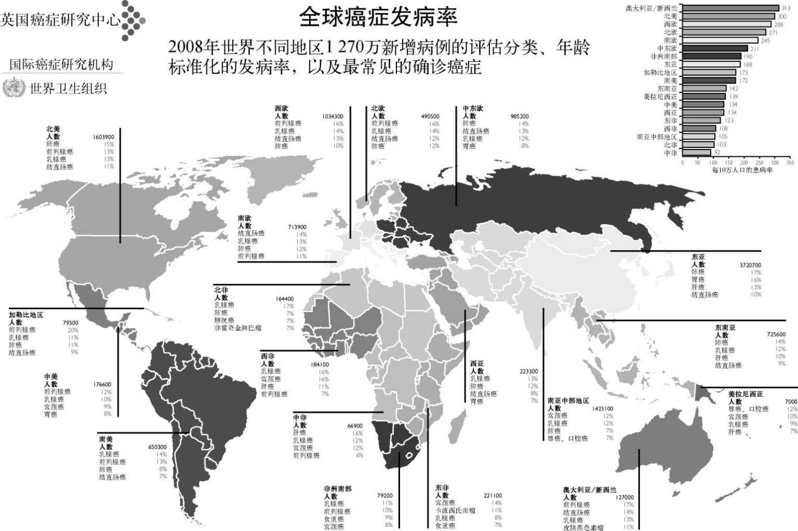
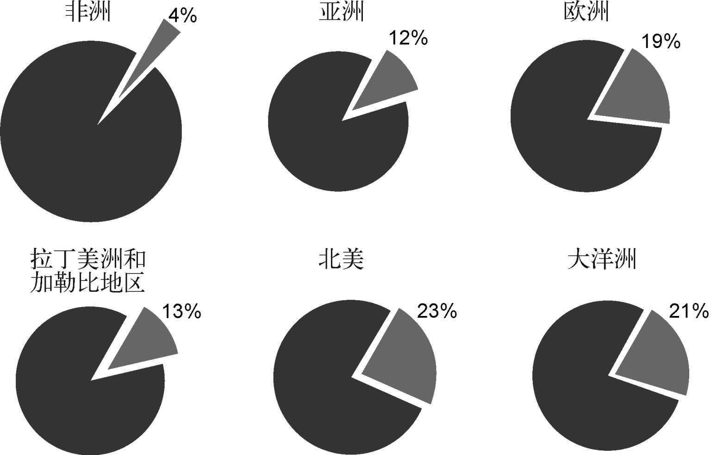
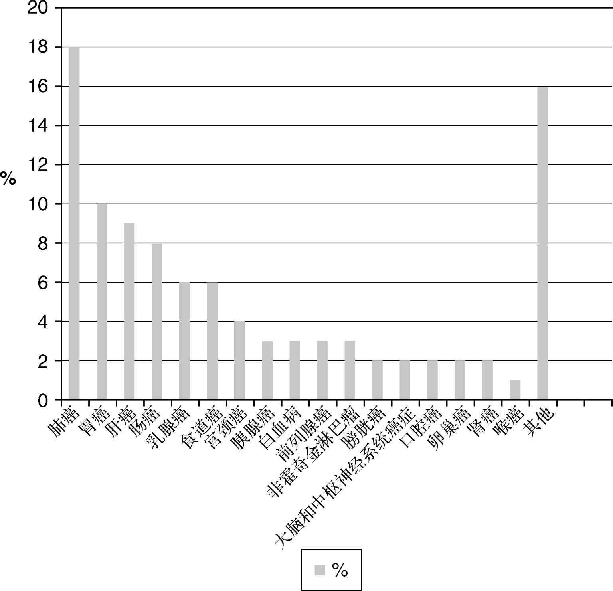
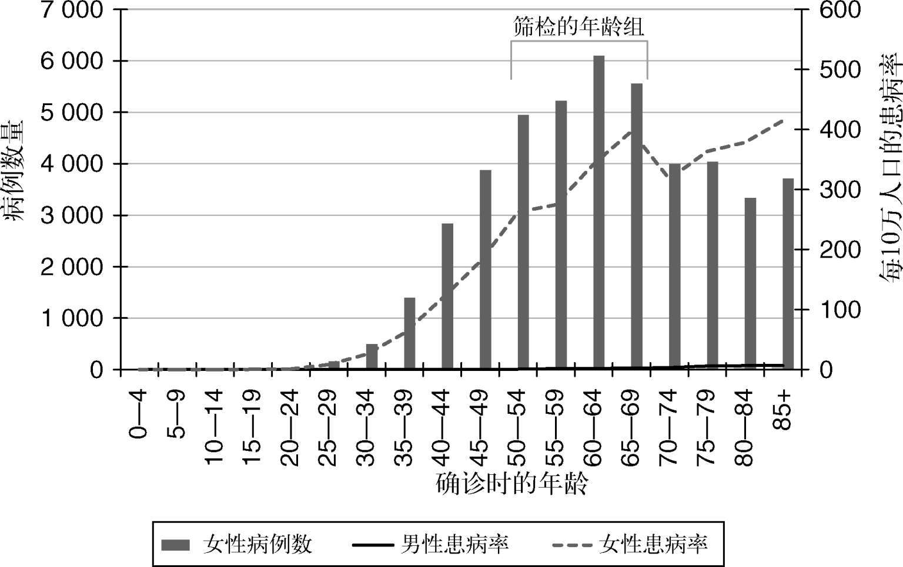
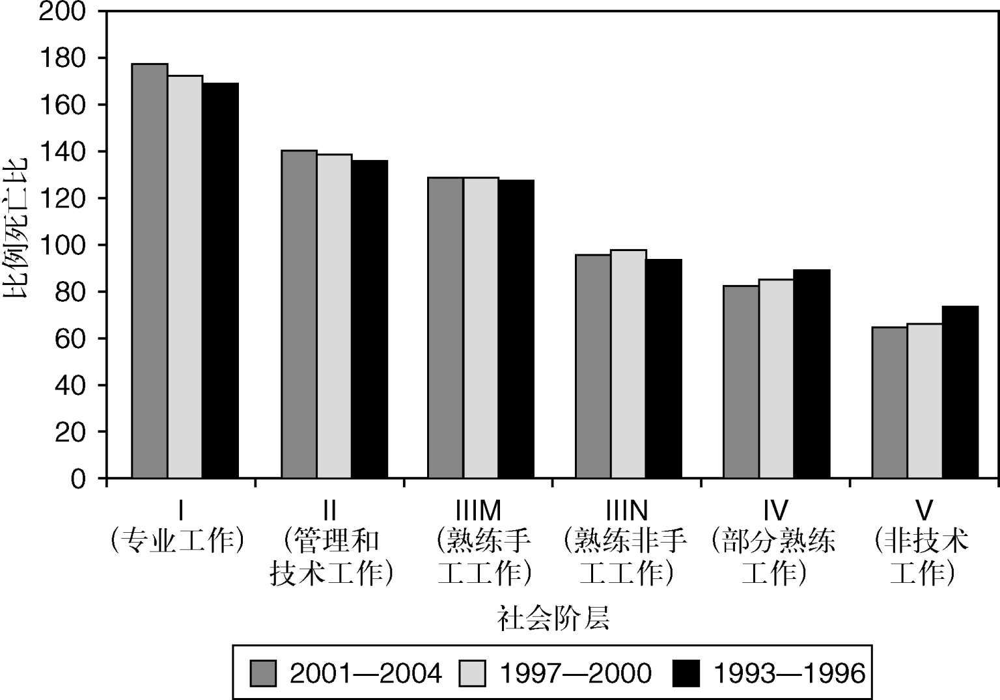
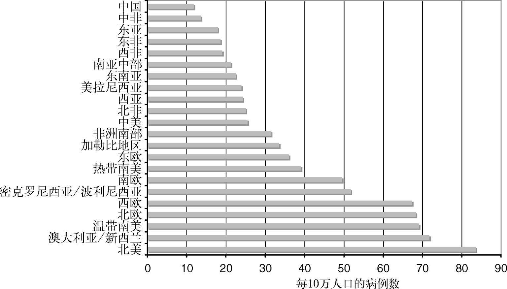
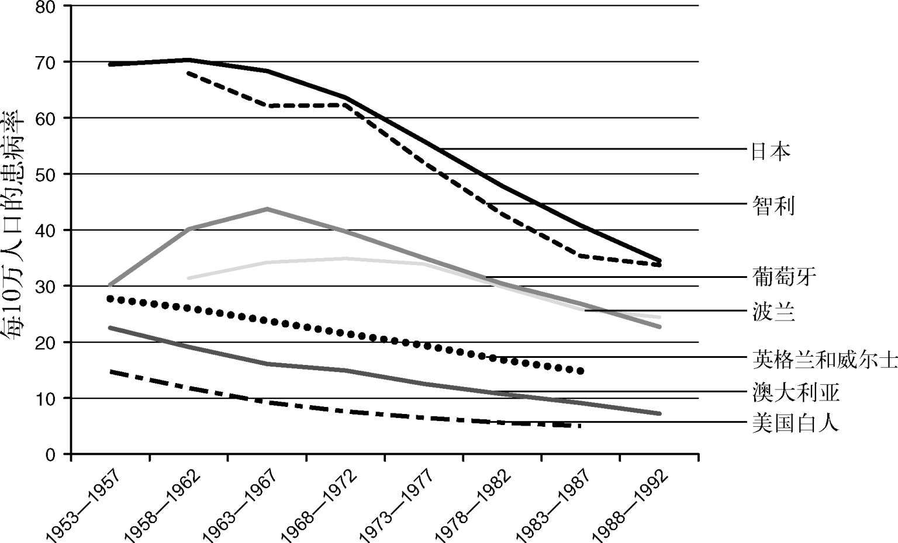
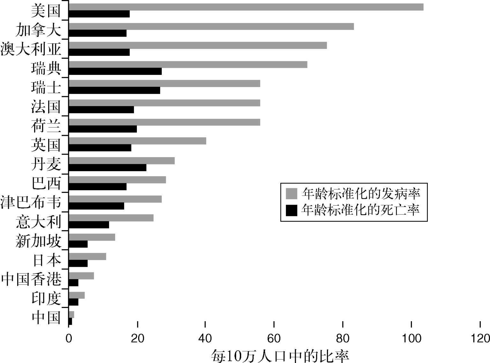

癌症很常见，极其常见。2008年，大约有1 270万人确诊罹患癌症，其中790万人死亡，约占所有死亡人数的13%。尽管有人认为，癌症是富裕国家的一种老年病，但这类死亡大约70%都发生在低收入或中等收入国家。罹患癌症的人不分性别、种族和贫富。诊断结果令闻者色变，盖因患上癌症的人不啻是接到了死刑判决（通常的确如此）。这种疾病本身及其治疗均会带来极大的痛苦与忧虑。治疗癌症是全世界医疗卫生系统的一大负担，因为导致过早死亡，癌症也是劳动人口丧失生产力的主要原因。本章将概述癌症问题，重点讨论某些更常见的癌症，以说明全球各地的数字有何差异。能够侵袭如此众多人口的疾病必然会有重大的经济影响，因此，本章还会关注经济和医疗卫生事业之间的一些相互作用的方式，这将是后续章节中进一步研究的主题。对于癌症发病率模式的研究为癌症的病因提供了非常有趣的线索（第二章对此有更全面的阐述）。本章也会谈及某些最惊人的关联。
癌症治疗和癌症研究也是产业活动的重要组成部分。临床试验中的半数药物是用于癌症的；2006年，所有癌症药物的全球市场价值为346亿美元，2008年，这一数字估计达到了480亿。分析师预测，2010年到2015年的增长率将达到每年10%以上。制药业每年花费在研究和开发癌症药物上的支出为65亿到80亿美元。这笔开销让政府和研究慈善机构在癌症药物研发上的投入相形见绌，这可能意味着新药都集中在商业影响最大的领域，而非公共卫生的范畴。拥有成功癌症药物的制药公司均位列全球最庞大的企业之中。生物科技公司就算没有可供上市的产品，但只要拥有一种“尚在研发”的有前途的癌症药物，便可因为该药物有可能在未来的某一天获批上市而身价数十亿美元。2009年，至少有19种抗癌药的销售额超过了10亿美元，就算在最富裕的国家，为患者采购这些药物也令医疗卫生系统不堪重负。
另一方面，约有三分之一的癌症患者能够接受的有效治疗极其有限，在最贫穷的国家，这一数字上升到一半以上。展望未来，人口日益老龄化，药价呈上升趋势，我们或许会面临这样的局面：只有最发达国家的最富裕阶层才会得到“最先进”的药物治疗。又或者，对治疗反应的预测更准确，会有助于实现针对个体的治疗选择，从而降低不必要或无效的治疗成本。打个比方，我们每次使用汽车或电脑，都预判它们可以运转，癌症药物则不同，大多数药物只对一部分患者有效。对那些以缓解症状或改善生活质量为目标的晚期患者而言，该比例或许远低于50%，因此大多数治疗都是无谓的，实际上或许比无效更糟，因为那些治疗还可能会导致无益的副作用。能够在治疗之前确认哪些患者会从中获益，将会非常节约成本，临床方面也会收效甚佳，因而已成为当今癌症研究的一大重点（见第四和第五章）。
癌症也令全世界的学术机构和大学为之着迷。1961年，约翰·F. 肯尼迪承诺在那个十年结束之前把人送上月球。九年后，尼尔·阿姆斯特朗和巴兹·奥尔德林便漫步于月球之上。十年后的1971年，理查德·尼克松为呼应这一承诺，宣布对癌症“开战”。就像近来的“反恐战争”一样，与一个多面向的全球问题为敌，充其量也不过只获得了局部胜利。尼克松最初承诺花费约一亿美元，这在当时看来简直是天文数字，但结果只是杯水车薪。自1971年以来，后续又投入了数十亿美元的研究经费，但三十多年后，癌症仍是全球最大的致死原因之一，发达国家约三分之一的患者，西方约五分之一的患者死于此病。治疗癌症显然比尖端的“火箭科学”更难。
全球各地为研究癌症的病因和治疗投入了巨额资金。2009—2010年，美国国家癌症研究所花费了47亿美元用于癌症研究；欧洲的相应开销约为14亿欧元。在英国，开支最大的是英国癌症研究中心，该中心是英国最大的慈善机构之一，2010年的捐赠收入超过了5亿英镑，反映出普通大众对找到癌症起因和治疗方案的重视程度（然而公共捐款的最大受助者竟然是动物而非人类！）。虽然研究开支如此庞大，我们还是没有真正理解绝大部分癌症的病因。此外，尽管药物和药物研究所费不赀，事实上却如第三章所述，大多数被治愈的癌症患者要么是因为接受了外科手术，要么是采取了放射疗法。化学疗法和诸如单克隆抗体或靶向“小分子”疗法等新式疗法虽然日益受到重视，其治愈病患的案例仍属少数，但在缓解疾病晚期症状方面却起到了重要的作用。
看待癌症带来的问题有不同的角度，从原始数据——有多少人确诊，多少人死亡——到个体差异——患上某种具体癌症的个人风险如何？基于人口的统计数据可能会以不同的方式呈现，从整个人口的患病率，到按年龄调整的患病率，再到寿命损失年数的计算。最后这种统计数据通常表示为70岁（《圣经》所说的“三个二十年又加十年”）之前的损失年数，因而假设70岁（有时是75岁）之后的死亡基本上代表了因衰老而过世。更复杂的是，癌症死亡率因收入、种族和居住国而大不相同。例如在欧洲和北美，乳腺癌和前列腺癌比日本和中国常见得多。从这些国家去美国的移民患上这些癌症的风险会接近美国白人的发病率，但整体风险仍会保持在较低的水平。这表明，远东地区乳腺癌和前列腺癌的较低发病率，部分原因在于环境，部分原因在于种族差异，或是环境的某些可转移的相关方面，比如日常饮食。
为了进一步探讨这些概念，我会使用一系列方法来描述原始统计数据的样本。至于哪些统计数据最有用，取决于读者的视角。例如，在公共卫生领域工作、负责为本地人口规划医疗保健的医生，就不会对另一个国家某种特定癌症的发病率有多少兴趣。相反，着眼于饮食对患癌风险之影响的研究者也许很希望关注不同群体之间发病率的差异，因为它们或许能解释哪些生活方式因素对于某种特定癌症的发展影响较大。癌症研究的资金筹集者倾向于关心目标捐赠人口中患者众多的疾病——在欧洲和北美，这方面的最佳范例就是乳腺癌，但近年来，为前列腺癌筹资的活动也以同样的方式利用了舆论风向。
原始数字
如前所述，全世界归因于癌症的死亡占比是13%左右，也就是占死亡总数的七分之一。这一数字在发达国家上升至四分之一到三分之一，那些地方因感染、营养不良或暴力导致的过早死亡风险相对要低得多。图1显示了世界不同地区确诊患癌的人数，图2和图3显示的是各个地区死于癌症的人数。各地区之间显然有很大的差别：世界某一地区很常见的癌症，在另一个地区却根本不在常见癌症之列。各列表中的差异实在太多，无法一一详细讨论。因此，我会介绍其中的一些例子，来说明为何存在这些差异，它们又是如何产生的。
肺癌
在世界任何地方，肺癌都是癌症死亡的最大病因，这一类型的癌症致死数目占全部癌症死亡人数的17%，累计120万人。这是一种高度致命的疾病，在大多数国家，确诊此病的人的五年存活率还不到十分之一。就算在治疗结果最佳的美国，也只有不到五分之一的患者长期存活。此外，全世界的死亡率正在迅速升高，1975年到2002年间翻了一番。图1显示了全世界各种癌症的诊断率，清楚地表明肺癌是全球各地区的主要杀手之一。众所周知，吸烟与肺癌之间存在着强相关。因此，肺癌发病率的差异因吸烟率不同而不同也就不足为奇了。大多数情况下，肺癌在生命的相对后期才得到确诊，在大多数病例中都表现为超过半个世纪的大量吸烟（吸烟量较少的青年人群显然也会患上该病，但这类病例相对少见）。也就是说，肺癌的患病率以及该比率的趋势（上升还是下降）反映了前半个世纪的吸烟习惯。如果我们知道了吸烟率的趋势，就可以预测某个人群肺癌患病率的未来趋势了。

图1 全球癌症发病率

图2 各大洲癌症死亡人数比例
在西欧和北美，男子吸烟率正呈下降之势，肺癌（以及与吸烟有关的其他疾病）的患病率也随之而落。与此相反，在发展中世界的大片地区，随着国家的工业化，吸烟率也迅速上升。日本的变化趋势就反映出这对癌症患病率的可能影响，1960—1980年间，在日本工业化的影响下，那里的肺癌患病率翻了不止一番。类似的变化如今在中国这样的国家也比较明显。原因有很多：在这些国家，吸烟这种习惯至今仍带着一种“酷炫”的光环，大大不同于烟民日益遭到唾弃的西方。那些国家的人们对与吸烟有关的健康问题意识一般较为淡薄，也没有实施在欧洲和北美日益常见的对烟草促销的限制。的确，在中国某个经济衰退的省份，官方近来还颁布命令，为了振兴当地的烟草种植业和提升税收，所有成年人都必须抽本地烟。因此，展望未来，我们会发现，在“发达”世界的肺癌问题逐渐弱化的同时，新兴工业化国家将会面临日益增加的与吸烟有关的癌症（以及诸如心脏病等其他问题）的负担，除非它们迅速采纳如今西欧和北美常规的那些控烟策略。当前看来这不太可能，正在工业化的世界因而可能会披上发达世界那并不合意的外衣。

图3 全球癌症死因
乳腺癌
从新增病例来看，乳腺癌是女性最常见的癌症，在女性癌症病例中占21%，在全球女性癌症死亡数量中占14%。不过，乳腺癌的整体存活率远胜肺癌，欧洲和北美有四分之三的患者能存活五年以上。就连欠发达国家也有过半数的乳腺癌患者实现了这一重要目标。

图4 2005年英国的乳腺癌诊断和死亡率
乳腺癌发生规律的研究也有助于表明，癌症统计数据在某些方面可以解释这种疾病的表现方式。
罹患乳腺癌的风险（与大多数癌症一样）随着年龄的增长而不断上升，从图4来自英国的数据就能看出这一点。所有发达国家都有着非常近似的分布。如果我们观察图中左侧的坐标轴——每个年龄段的实际患病人数——会发现峰值出现在50—70岁这一年龄段，虽然70岁以上年龄段的风险较高，但人数较少，因为死于其他原因的人数较多。还可以看到，尽管资金募集人常常在宣传材料中使用40岁以下女性的病例，这一年龄段的女性却鲜有确诊此病的。图5从另一个角度，即社会阶层的角度，考察了病例的分布。该图表明，较为富裕、受教育程度较高的女性罹患此病的风险明显高于不太宽裕的人。受过教育的中年女性往往是难以对付的社会运动参与者，既有时间，又有见识来有效地游说。就像我们在后文中将会看到的那样，癌症研究和治疗获得两者都不是纯粹根据需要来安排的，而往往会受到来自代表特殊群体的游说组织的巨大压力。

图5 乳腺癌的诊断率和社会阶层

图6 全世界乳腺癌诊断的差异
全世界乳腺癌风险诸图再次显示出一些惊人的趋势。图5明确指出，乳腺癌在某种程度上与富裕有关——富国的患病率高于穷国。至于烟草/癌症的关联，吸烟与风险之间有着十分明显的关系。我们很难理解，平均收入更高为何会增加某种疾病的风险——这与大多数公共卫生趋势背道而驰。那么原因是什么呢？一个因素是人口的年龄结构。正如图4所示，患癌的风险随着年龄而上升。因此，预期寿命短的贫穷国家女性或许只是因为寿命不够长而没来得及患上乳腺癌，在生命早期便已死于其他的疾病。然而，这并不能解释图中所示的风险在各年龄段的极大范围。对于观察到的潜在差异，有各种不同的理论，最可能的解释与激素对乳房组织的作用有关。例如，初次受孕年龄和怀孕次数对癌症风险有明显的影响。青春期开始时间晚、初孕时间早，以及怀孕频次较高看来都是预防乳腺癌的因素。在西方，因为营养较好和高蛋白饮食，青春期开始的时间比从前早，而因为有效的避孕、女性日趋独立以及更好的教育，怀孕发生得较晚。在贫穷国家，青春期来得较晚，女性对生育也缺乏控制。虽说这种情况显然会带来各种潜在的问题，看来却防止了乳腺癌。哺乳会在产后影响激素水平，似乎也能防止乳腺癌，目前西方受过良好教育的女性中更盛行哺乳，似乎可以预测趋势将向反方向倾斜。随着国家与个人收入的增加，出生率渐趋下降，而初孕年龄却渐趋上升，因此可以预期，和肺癌一样，扩大发展将会导致全球乳腺癌病例的增加。
显然，乳房是终生随着激素水平变化（这是青春期、孕期、哺乳期、绝经期，或口服避孕药和激素替代疗法等药物治疗的结果）而变化的器官。从上述观察结果可以得出，影响激素水平的治疗或许可以改变罹患乳腺癌的风险。激素替代疗法（HRT）广泛用于绝经期症状。除了改善全身潮热和丧失性欲等症状之外，人们还希望HRT可以预防绝经期后日趋增多的疾病，诸如心脏病和会带来骨折风险的骨质流失（骨质疏松症）等。尽管HRT对于实现某些目标的确行之有效，但长期使用似乎又会增加乳腺癌的风险。口服避孕药片也一样，它也是通过改变正常的激素环境而起效的。因此，这些影响十分混乱：（与怀孕和哺乳关联的）某些激素变化可以防止乳腺癌，而（口服避孕药和HRT等）其他变化却会增加风险。有鉴于此，很多实验室研究都关注各种激素对于诱发乳腺癌所起的作用，以及研发通过干预激素的作用途径来治疗乳腺癌的药物。他莫昔芬正是这样的一种药物，它的主要功能是阻断雌激素的效用，可以被看作是有史以来最有效的药物之一，自进入临床应用以来，它在大约25年里拯救了足有数百万女性的生命，并帮助延长了更多人的寿命（见第三章）。
最后，有一种看法认为，乳腺癌是一种年轻女性的疾病，这种观念在某种程度上是由倡导更好治疗和研究的某些团体推动的。一般说来，正如我们已经看到的那样，这并不准确。然而，对乳腺癌风险模式的研究表明，某些家族罹患乳腺癌的风险似乎极高，母亲、姐妹、姨母都在早年染上此病，往往双侧患癌或伴随卵巢癌，男性亲属也会患上前列腺癌。这些家族显然是深入研究的理想对象，鉴于这些家族的风险如此明显，患者往往会非常愿意参与研究。对这类病例的遗传模式的研究表明，乳腺癌的风险从母亲传给孩子的可能性是50%，并提出这种疾病至少有两种常见的遗传形式，外加一系列不太常见的形式。第二章对这个研究领域有更详细的说明。
肝癌
肝癌是全世界最常见的癌症之一，但它的分布模式与肺癌和乳腺癌大不相同。让人感兴趣的是，一种可以免费注射的（乙型肝炎）疫苗接种可以有效预防患上肝癌。总体而言，以新增病例来说，它是第六常见的癌症，但在导致死亡的癌症中却是第三常见的死因，表明这种疾病极为凶险。肝癌病例模式中有不少关键特征值得更详细的考察。中国和非洲部分地区的发病率比欧洲和北美高出五至七倍。这种疾病几乎是致命的，部分原因在于它发生在公共卫生欠发达的地区，但主要原因是乙肝病毒（HBV）会对肝脏造成严重伤害，从而导致了这种疾病。
肝癌与肝脏的长期受损有关，在欧洲和北美，这通常是酗酒造成的。在这种癌症更常见的世界某些地区，更重要的病因是HBV感染。1965年，巴鲁克·布隆伯格博士首次描述了这种情况，并为此获颁诺贝尔奖。多年以前，流行病学研究就确定了肝炎与肝癌之间的联系。后续的研究发现，病毒的分子生物学同样表明它有着直接致病作用，而不是偶然关联。在建立了病毒和癌症之间的联系后，治疗一种常见癌症的疫苗就切实可行了。令所有相关人士大感宽慰的是，HBV疫苗接种大获成功，风险最高的人群迅速获益。
消化道癌
一般来说，消化道癌要么发生在顶端（胃和食道），要么发生在末端（结肠和直肠），中段（小肠）的癌症相对罕见。消化道癌的模式有一些有趣的趋势，我会一一道来，先从顶端的胃癌开始。
总体而言，每年几乎有100万人确诊胃癌，其中有大约三分之二被这种疾病折磨致死——至少有65万人之众。如图7所示，过去50年来，西方的胃癌发病率持续下降，过去它是一种相对常见的癌症，如今则相当罕见。在世界其他地区，胃癌发病率也开始下降了，但时间较为晚近。人们提出了各种可能原因，从价格低廉的冰箱的普及到胃溃疡的治疗，但确切的原因目前尚未完全查清。
大肠的各种癌症也表明人群之间存在巨大的差异。大体上说，大肠癌在欧洲和北美很常见，在远东就不太常见了，在非洲则很罕见。因此，这主要是一种发达世界的疾病。总的来说，每年约有100万人确诊此病，其中大约一半患者因此而死亡。如今由于认识提高、早期诊断和疗效改善，该病在北美和欧洲的死亡率呈下降之势。对移民的研究表明，这种差异与环境有关，无关种族——从低风险国家移民到高风险国家的人会迅速呈现出新家园的风险模式。此外，在日本等日益采纳西化饮食的国家，该病的发病率则有所上升。因此，这种结果的主要可能原因是饮食——低位肠道内壁环境的差异显然来自顶端进食之物的差别！如此说来，似乎存在着某种交互影响——过去50年来饮食的变化让胃癌日益罕见，却导致肠道另一端患癌的风险增加。研究这类变化给各种癌症的起源提供了重要的线索，同时还可以为发现预防策略指明方向。

图7 过去若干年来的胃癌患病率
前列腺癌
前列腺癌是一种有趣的疾病。在欧洲和北美，它是男性最常确诊的癌症，也是男性的主要癌症死因之一。2007年，全球有67万男性确诊此病。致死率难以确定，因为确诊患有早期前列腺癌的很多男性并非死于这种疾病。和乳腺癌一样，不同国家之间的死亡率差异很大。某些差异似乎是前列腺特异抗原（PSA）血检应用率的差异造成的，这种检查能够发现早期癌症，可以作为一种筛检。
PSA是前列腺产生的一种蛋白质，其正常功能是液化射精期间产生的液体（题外话——啮齿动物没有PSA，它们在交配期间会产生一种固体的精液栓，而小鼠却在前列腺癌研究中被广泛使用）。未患癌症的男性血液中有少量的PSA。患上前列腺癌之后（其他前列腺疾病也基本如此），大量的PSA被释放进血流之中，使得一PSA的测量既可作为种早期的诊断检查，也可监测前列腺癌。1990年代初以来，这种检查得到了越来越广泛的使用，既用来筛检未诊断出的癌症，又作为一种监测癌症治疗反应的工具。在美国，多种渠道广泛提供这种检查，检测试剂的制造者也向大众积极推广——男性需要知道自己的PSA水平，就像人们一度需要了解自己的胆固醇水平。在英国，政府政策直到最近还在阻碍“机会致病性的”PSA检测，因为没有证据表明前列腺癌的早期诊断能够降低该病的死亡率，所以也没有出台全面的筛检计划。近来的筛检试验数据表明，PSA检测或许可以降低前列腺癌的死亡率，但在大约40个由PSA检测发现而得到治疗的男性中，只有一人能免于死亡。这种获益水平是否会促使政府确立筛检计划仍有待观察。应当指出，乳腺癌筛检的获益水平也差不多，只是人们把它想象得很高，所以乳腺癌筛检在整个西方世界被极为广泛地使用，而PSA筛检虽然得到了广泛应用，其好处却远不及前者鲜明。目前，全世界的PSA筛检差别很大，大体上是由消费者推动的。
如果从前列腺癌的诊断和死亡率开始考察，我们可以看到某些非常明显的差异（图8）。欧洲人和北美人比居住在中南半岛的男性的死亡率要高得多，后者患上此病相对罕见，在非洲大部分地区也是一样。欧洲和北美内部还有更多有趣的差异，距离赤道越远，死亡率就越高，这在美国和澳大利亚的白种人之间最为明显，这两地白人人口的种族特征相当一致。如果我们观察种族影响，也会发现惊人的差别：非裔男性的前列腺癌死亡率大约是白种人的两倍。与此相反，中南半岛裔保持了其来源地区的较低风险，这和在女性与乳腺癌中所观察到的结果相近。
该如何解释这种情况？最佳证据表明，白种人和亚裔族群之间的差异，是饮食的差异外加对引发前列腺癌的无论何种因素（这基本上还不得而知）的种族敏感性差异所导致的。纬度的差别更难以用饮食来解释，显然也不能用种族来解释，因为欧洲、北美和澳大利亚均有病例。最好的解释似乎是日晒，日晒是有保护作用的。鉴于目前各种大型公共健康运动都提倡人们减少日晒，这不啻是个非常惊人的结论。日晒怎么会影响某个内脏器官的患癌风险？要知道这个内脏可是最“不会见光”的啊。答案似乎是维生素D。缺乏维生素D会导致佝偻病，令人想起维多利亚时期的济贫院和畸形的儿童，但这种疾病或许相当于21世纪癌症风险的上升，以下文字框对此做出了总结。
维生素D、阳光与癌症
维生素D密切参与了大量组织的生长和发育，其中就包括前列腺和乳房等腺体结构。维生素D的新陈代谢相当复杂，但关键的一步是在皮肤中发生的，且需要阳光。长期缺乏日晒可能会导致“活性”维生素D的缺乏——这倒还不足以引发佝偻病，却足以略微改变患上前列腺癌的概率。这还可以解释为何通常肤色最暗的非裔男性如果住在温带地区，患上前列腺癌的风险最高。如果这个假设是正确的，就可以预测在人群中日晒时间最长的白种人患上前列腺癌的风险较低。皮肤癌是个衡量日晒的好指标，已有人对皮肤癌患者的前列腺癌风险进行了研究。正如预测的那样，由皮肤损伤和皮肤癌证明的日晒时间最长的人，其患上前列腺癌的风险降低了。此外，日晒增加之后，个体患上前列腺癌的风险有很大的下降——一项研究估计，会降低40%之多。就连那些处于前列腺癌发展期的人，日晒似乎也会显著延缓确诊——日晒时间最短的人确诊的平均年龄为67岁，日晒时间最长的为72岁，延缓了大约5年之久。因此，核心思想看来非常一致——男性群体的最大杀手可以通过更多的日光浴来预防，然而公共卫生政策的建议却反对这样做！
如果前列腺癌存在这种影响，并显然受到了皮肤中产生的循环因子的调节，那么在其他癌症中能否也见到这种情况？答案看来是肯定的，而且这种影响的大小在几乎所有内脏癌症中似乎没有多大差别。随日晒增加而导致风险上升的唯一一类癌症就是皮肤癌（特别是黑色素瘤），事实上死于这种癌症的人数相对极少。因此，对前列腺癌死亡率的研究揭示了各种关于常见癌症病因的有趣内容，并抛出一种非常惊人的关联，从根本上挑战了当前标准的公共卫生建议。在作者看来，关于日晒的既定认知亟须彻底更正。
在诊断和死亡率方面还有第二组惊人的差异。比方说，如果我们比较英国和美国，就会看到每10万人口的死亡率非常接近，但诊断率大不相同，美国前列腺癌诊断率与死亡率之比是英国的两倍以上。从另一个角度来看，美国前列腺癌患者的死亡率远低于英国。

图8 前列腺癌的发病率和死亡率
这有若干可能的解释——在美国，前列腺癌或许真的要常见得多，以及美国的医疗系统治疗此病比英国系统要好两倍。尽管与美国医疗系统相比，英国系统的治疗结果确实略逊一筹，但对于大多数癌症来说，这些差异只是几个百分点的差距，不大可能解释治愈率的明显差距。此外，考察一下其他常见癌症的检测率，就会发现英美两国每10万人口的检出率大致相近，这说明有其他因素在起作用。答案就在于PSA血检。
公共政策的差别以及PSA检测的普及度导致英国接受检查的男性人数远低于美国，因而该病的诊断率也要低得多。然而，美国的PSA血检率高，而确诊此病的大多数美国人病情的临床表现轻微。如果不是确诊此病，他们大概不会被它困扰，这表明之所以会存在发病率的巨大差异，大体上是因为跟英国相比，美国对相对并不致命的轻度疾病的诊断率较高。大西洋两岸都有一小部分人确诊此病，并最终死于该病更为凶险的形式。从1990年代末以来，死亡率一直在下降，但这应直接归因于筛检还是其他因素，仍在激辩之中。
癌症治疗的政治活动
癌症治疗的政治活动显然有很多角度，都与该病的经济因素密切相关。为本章讨论之目的，我会以乳腺癌和前列腺癌为例讨论性别差异，以乳腺癌和肺癌为例讨论社会阶层的影响，由此集中探讨诊断病例和死亡率的差异，以及这些差异如何推动了该病的政治活动。
前列腺癌在很多方面都可以说是与乳腺癌对应的男性疾病。它们的相似性可以延伸到很多层面：两个器官在性行为和生殖方面都起到了一定的作用；两者都会根据激素水平而终生发生变化；两种癌症都可通过改变激素环境来治疗；而治疗两个器官各自发生的癌症均会导致性功能的深刻变化。在政治上，数十年来，乳房那强有力的性象征及情感意象，一直被用于将大量研究和治疗资金引入乳腺癌，效果极其明显。这使得女性乳腺癌病患的结果得到了稳定的逐步改善，具体体现为存活率提高了，成功治疗所造成的损伤也有所减少。例如，越来越多的女性接受了伤残程度较低的手术或乳房重建，而不是激进的乳房切除术。在药物资金问题上，女性也一直在卓有成效地争取新的治疗方法——曲妥珠单抗（又被称为“赫赛汀”）在整个欧洲和北美医疗系统中的迅速应用就是证明。
直到最近，尽管两种癌症在生物学上可以分庭抗礼，却没有类似的运动来支持男性前列腺癌患者，也没有旨在改善治疗和效果的倡议出现。例如，截至1995年，英国在前列腺癌研究上的开销只有乳腺癌的十分之一。过去十年间，情况有所改变，部分原因就在于PSA检测。这使得前列腺癌的种种情况大幅“左倾”，晚期病例减少，早期病例增多，治疗的选择也更加多样，并且该病有了治愈的可能，带病存活期也延长了。鉴于政治和经济权力大都集中在中老年男人手中——他们最有可能患上这种疾病，却鲜有患上乳腺癌的（尽管男人也会患上此病）——历史上一贯缺乏对前列腺癌的公共卫生和研究兴趣便尤其令人惊讶。究其根本原因，差别似乎来自男人和女人不同的心理——女人谈论乳腺癌实属平常，谈论乳腺癌的女人并不会被视为弱者，往往还会被视为自强不息的典范，凯莉·米洛 [1] 近来的全球巡回演唱会便是一例。另一方面，在以前男人们对这种疾病感到非常难以启齿，特别是在治疗附带着诸如阳痿和失禁等“无男子气概”的风险时，更不要提诊断所需的途径（通过直肠）在本质上便令人尴尬不已。加之大多数男人在与健康有关的所有事情上普遍采取“鸵鸟”态度，结果便是男人要付出寿命较短、不及女人健康的代价。
然而，公共和经济政策近来发生了变化，为男性治疗和研究该病投入的资金增加了。部分程度上，这无疑是由于制药业终于意识到，针对这一西方世界最大的男性癌症杀手的投入，利润空间不可限量。科林·鲍威尔、罗杰·摩尔和鲁道夫·朱利安尼等重要公众人物的态度也发生了变化，他们开始愿意公开谈论自己接受该病治疗的情况了。
最后，在癌症治疗政治活动这一背景下，吸烟和公共政策的问题也值得一提，因为在过去的几十年里，这个问题在世界各地差异很大。不久前，烟草公司实际上还在投放这样的广告标语，说某种香烟是医生们偏爱的品牌。吸烟与各种癌症风险增加之间的关联是流行病学研究的成就之一，使得发达世界吸烟率和与之相关的各种疾病的患病率大幅下降。促成这一结果的有一系列措施，从立法（禁烟）到教育（禁止广告和赞助，健康警示语），再到财政（对该商品征税，这是额外的收益，可用于给吸烟者收拾残局，支付所需的医疗费用）。然而，发展中世界的情况不同：吸烟仍被认为很“酷”，针对年轻人的广告和营销也支持这种暗示，而在欧洲和北美，越来越多的人认为抽烟是遭人唾弃的行为，只配在寒冷的大门外进行。此外，大型跨国烟草公司在把金钱带给发展中国家的同时，也拥有了强大的政治影响力，可用于缓和公共卫生对这种习惯的口诛笔伐（西方世界就曾抨击声不断）。再加上发展中国家年轻的人口结构，发展中世界与吸烟相关的癌症——肺癌、膀胱癌、咽喉癌、口腔癌——将在未来几年流行开来。在中国这样迅速现代化、生活标准提高、预期寿命延长的国家，预计这将导致这些癌症的发病率大幅增加。